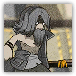
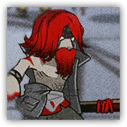

拾荒者 Junkman
近战 物理；普通 任意
|
 |
穿着着破损服装的作战人员。缺少打理，看起来是流浪汉的样子。但据了解，也会有佣兵刻意伪装成贫民来隐藏身份。这些流浪汉虽然来路不明，但攻击意图强烈，需要有所防范。 |
拾荒者丨Junkman
中型类人（任意种族），任意阵营
| AC 11 | 先攻 +0（10） |
| HP 52（7d8+21） | |
| 速度 30 尺 | |
| 调整 | 豁免 | 调整 | 豁免 | 调整 | 豁免 | |||||||||
|---|---|---|---|---|---|---|---|---|---|---|---|---|---|---|
| 力量 | 16 | +3 | +3 | 敏捷 | 11 | +0 | +0 | 体质 | 17 | +3 | +5 | |||
| 智力 | 9 | -1 | -1 | 感知 | 9 | -1 | -1 | 魅力 | 7 | -2 | -2 |
| 技能 运动+4，威吓+0 |
| 抗性 毒素 |
| 装备 巨棒 |
| 感官 被动察觉9 |
| 语言 任意一门语言（通常是通用语） |
| CR 1/2（XP 100；PB +2） |
特质 Traits
坚韧皮肤 Tough Skin。拾荒者为抵抗法术效应而作的体质豁免检定具有优势。
动作Actions
巨棒 Greatclub。近战攻击检定：+5，触及5尺。命中：7（1d8+3）挥砍伤害。
流浪者 Veteran Junkman
近战 物理；普通 暴徒
|
 |
穿着着破损服装的作战人员。缺少打理，身上带有一些伤疤，可能比一般拾荒者更有交战经验。据了解，会有佣兵刻意伪装成贫民来隐藏身份。这些流浪汉虽然来路不明，但攻击意图强烈，需要有所防范。 |
流浪者丨Veteran Junkman
中型类人（暴徒），混乱中立
| AC 11 | 先攻 +1（11） |
| HP 85（10d8+40） | |
| 速度 30 尺 | |
| 调整 | 豁免 | 调整 | 豁免 | 调整 | 豁免 | |||||||||
|---|---|---|---|---|---|---|---|---|---|---|---|---|---|---|
| 力量 | 17 | +3 | +3 | 敏捷 | 12 | +1 | +1 | 体质 | 18 | +4 | +4 | |||
| 智力 | 11 | +0 | +0 | 感知 | 10 | +0 | +0 | 魅力 | 9 | -1 | -1 |
| 技能 运动+5，察觉+2，威吓+1 |
| 装备 短棍，布甲 |
| 感官 黑暗视觉60尺，被动察觉12 |
| 语言 通用语，以及一门其他语言 |
| CR 2（XP 450；PB+2） |
特质Traits
坚韧皮肤 Tough Skin。流浪者为抵抗法术效应而作的体质豁免检定具有优势。
动作Actions
多重攻击 Multiattack。流浪者发动两次攻击。
巨棒 Greatclub。近战攻击检定：+5，触及5尺。命中：7（1d8+3）挥砍伤害。